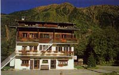

chalet Glaciers du Mont Blanc (1000 m)

Département, commune : Haute Savoie, commune de Chamonix
Cartes : AsF© 16 (case G30), IGN Top25 3531 ET pli B3
Situation : les Montquarts. Adresse : 224 route des Tissières, 74400 Chamonix, 04 50 53 35 84, fax : 04 50 53 64 23
Propriétaire : SCI des Bossons, 224 route des Tissières, 74400 Chamonix
Gardien : François-Marie Bidault
Ouverture et gardiennage : ouvert et gardé toute l'année
Commodités : 80 places (chambres de 2 à 7 personnes avec cabinet de toilette),
restauration l’été, bar, salle hors-sacs,
salle de jeux, salle TV, location de chaussures et de skis,
eau potable à l’intérieur.
Accès : en voiture (3 km de Chamonix, 3 km des Houches)
Itinéraires à proximité : TPMB
Randonnées à partir du refuge :
guide ou site AsF© : la Jonction, les Glaciers, Bel Lachat
autres randonnées : -
Photo : carte du gîte.